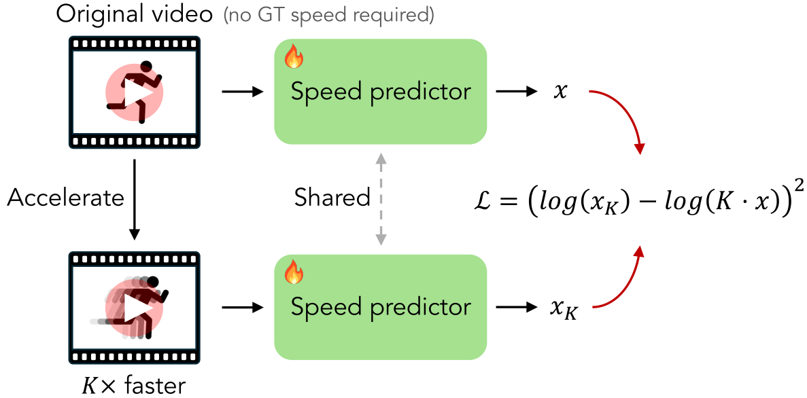
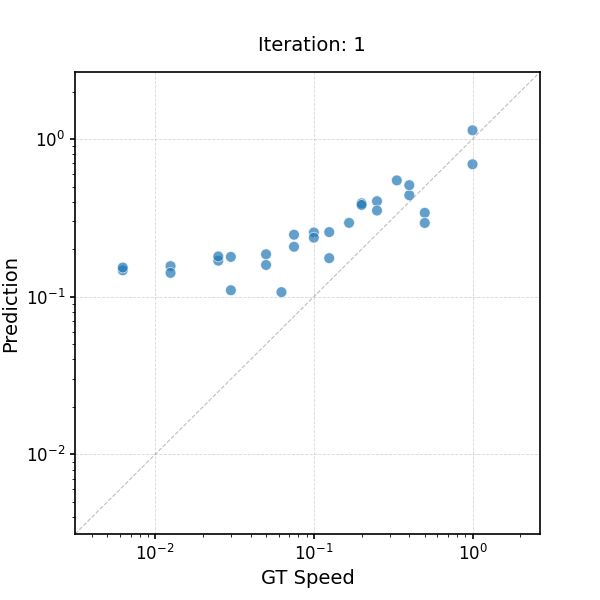

Seeing Fast and Slow:
Learning the Flow of Time in Videos
Abstract
How can we tell whether a video has been sped up or slowed down? How can we generate videos at different speeds? Although videos have been central to modern computer vision research, little attention has been paid to perceiving and controlling the passage of time. In this paper, we study time as a learnable visual concept and develop models for reasoning about and manipulating the flow of time in videos.
We first exploit the multimodal cues and temporal structure naturally present in videos to learn, in a self-supervised manner, to detect speed changes and estimate playback speed. We then show that these learned temporal reasoning models enable us to curate the largest slow-motion video dataset to date from noisy in-the-wild sources. Finally, using this rich, diverse data, we develop models capable of temporal control, including speed-conditioned video generation, which produces motion at specified playback rates, and temporal super-resolution, which transforms low-FPS, blurry videos into high-FPS sequences with fine-grained temporal details. Our findings highlight time as a manipulable, perceptual dimension in video learning, opening doors to temporally controllable video generation, temporal forensics detection, and potentially richer world-models that understand how events unfold over time.
Learning to Detect Temporal Speed Changes — Leveraging the Principle of Time-Frequency Scaling
⚠️ Audio is only for collecting training samples; the final detector is purely visual!
Learning to Detect Temporal Speed Changes — Applying Speed Change Detector to X-men Kitchen Scene
Learning to Infer the Speed of Time — Leveraging the Equivariance of Speed Estimation

